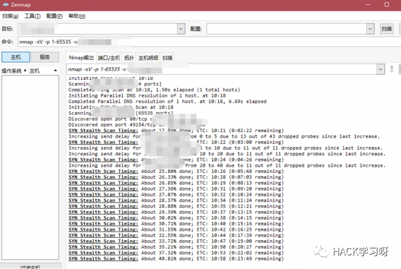

看我如何拿下BC站的服务器
一、信息收集
拿到目标网站，可见是一个很常规的bc站。
先进行简单的信息收集，通过Wappalyzer插件可见php版本与windows serve这两个比较重要的信息
命令行nslookup+url查看ip,发现没有CDN
再到爱站上看看
嗯，柬埔寨可还行
知道ip地址后端口扫描一波（全端口扫描+服务探测。这个过程比较漫长，可以先干别的）

在扫描之余尝试3389连接远程桌面（因为开始已经看到是windows serve的服务器）

试了两次，猜测是修改端口了，或者是登录ip白名单？
二、后台爆破
回到web，反手在url后面加一个admin
后台出来了，这bc有点水啊，随手测了几个弱口令，无果
发现没有验证码校验，抓包爆破一波
通常找一些常规的弱口令进行爆破就够了
秒出密码：123456，我吐了，他们运维可能要被打死
三、寻找上传点
这么简单就拿下了后台，我们当然不会满足。
大致浏览了一下后台的各个功能，寻找可以利用的地方，在系统管理处找到一处上传点
（有没有表哥发收款码过来，暴富的机会来了！）
随便写一个一句话，并将后缀改成.jpg并且抓包发送到Repeater查看
提示“不是真正的图片类型” ，在包内改成php后缀，提示非法文件类型
感觉是白名单+文件头校验，尝试图片马
尝试了几波，白名单限制得很死，没绕过去
顿时陷入了僵局，还是另外寻找突破口吧
四、峰回路转
认真想了一下，它是Windows，而Windows的主流建站工具，宝塔，护卫神，phpstudy，upupw。之前看到它的php版本是5.2.17，正好想到前段时间爆出的phpstudy的2个后门，后门存在于php-5.4.45和php-5.2.17两个版本中。马上测试一波
请求包中Accept-Encoding: gzip, deflate,将gzip,deflate中间的空格删掉
并在下面加上一句：Accept-Charset:+所执行命令的base64编码
我惊呆了，真的是用phpstudy建站的，这站长心也太大了吧,接下来的事情就好办多了。
五、蚁剑无文件shell连接之
编码器记得改成base64
然后将一句话进行base64编码，复制到 Accept-Charset:后面
修改蚁剑内的请求信息，处Header头修改如图下
测试连接，成功连接上
发现直接是SYSTEM权限，这就好玩了
六、上传mimikatz抓取Hash
新建目录，上传winrar.exe +mimikatz
使用上传的winrar解压，命令：winrar.exe e x64.rar
运行mimi.bat,这里说一下下图后面最好加上一个exit，不然的话mimikatz会不断的写日志，导致log文件越来越大,当时就犯了这样一个错误

将生成的mimikatz.log复制到网站根目录下,然后去查看
成功抓到管理员的RDP的密码。
回头看看之前扫的全端口也扫好了
可见总共开了三个端口，一般更改了3389端口 用nmap扫描加 -sV参数后，扫出的rdp服务,一般service会显示为 ssl/unknown.
尝试远程桌面连接
嘻嘻，成功登录，拿下服务器，随即点了根烟，将所有证据打包好，掏出了手机拨打110
七、总结
在我们拿下webshell的时候，想要获取数据或者源码往往会用菜刀或者蚁剑去打包，但是这个时候往往就会出现很多问题，列如打包失败，或者是打包得不完整等等。
这个时候如果对方是windows服务器的话，我们可以将我们本地装的winrar.exe上传过去
压缩盘下的dat文件夹，并且命名为bat.rar winrar.exe a -ag -k -r -s -ibck c:/bak.rar c:/dat/
压缩多个文件 winrar a -ag -ibck bak.rar filename1 filename2 filename....
参数说明： a :备份所有文件； -ag :当创建压缩文件时，以格式“YYYYMMDDHHMMSS”附加当前日期字符串,文件名bakYYYYMMDDHHMMSS.rar； -k :锁定压缩文件； -r:备份目录和子目录； -s :创建固实压缩文件； -ibck:后台运行；
filename1：要压缩的文件名，可以多个，也可用通配符file*

点赞，转发，在看
原创投稿作者：楚天
作者博客：https://ct-gov.cn/
文章写于：2019/12/10/